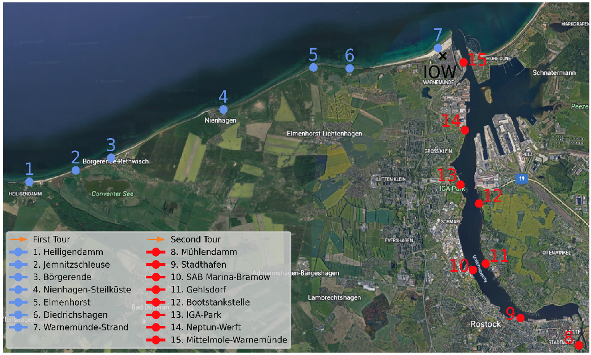
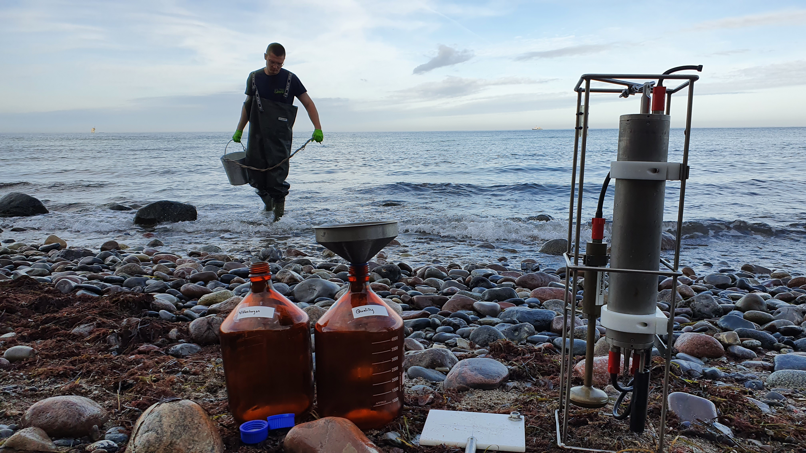
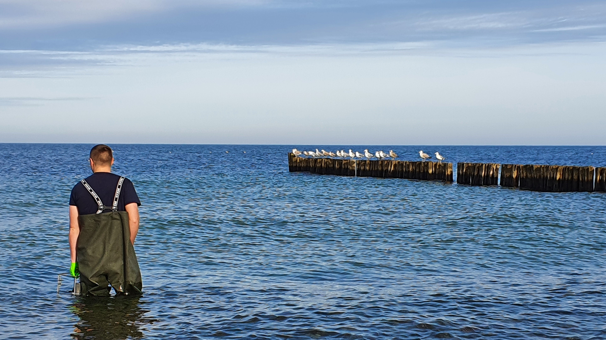
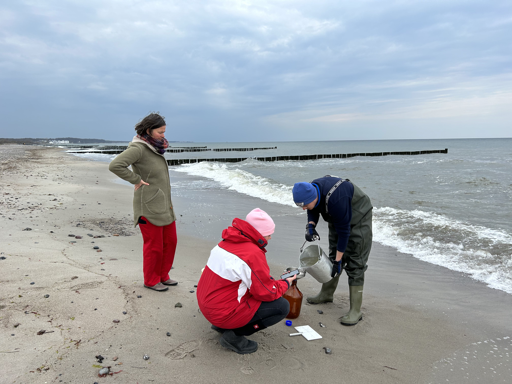
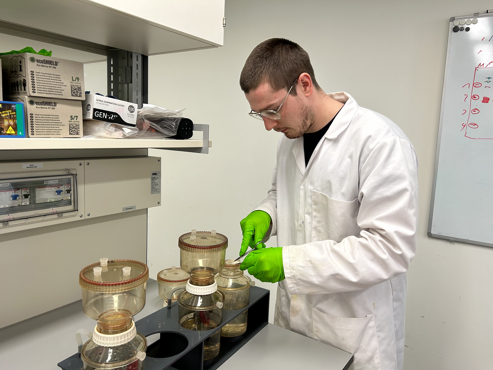
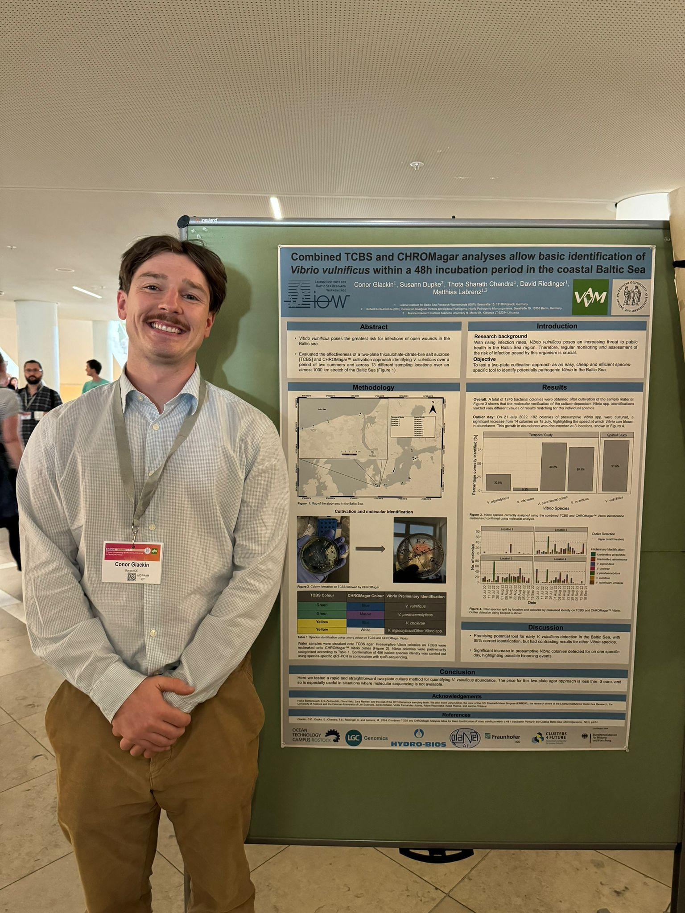
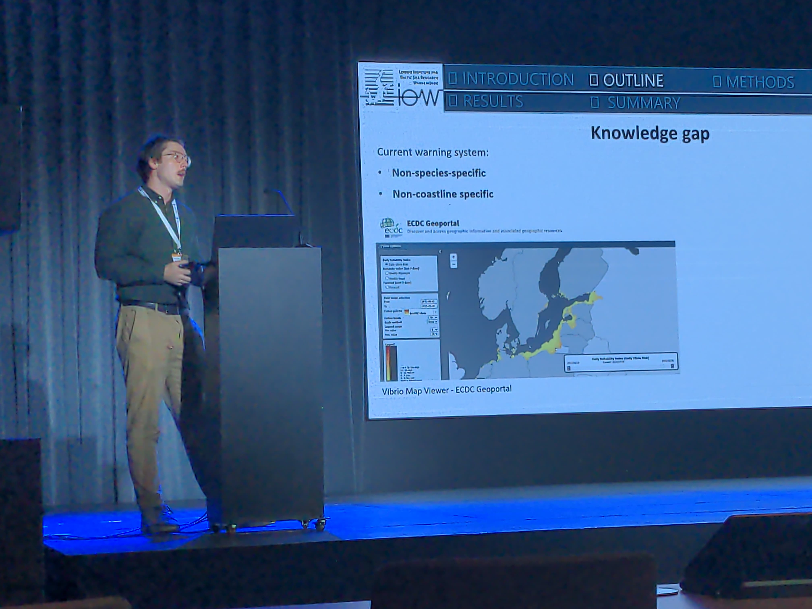
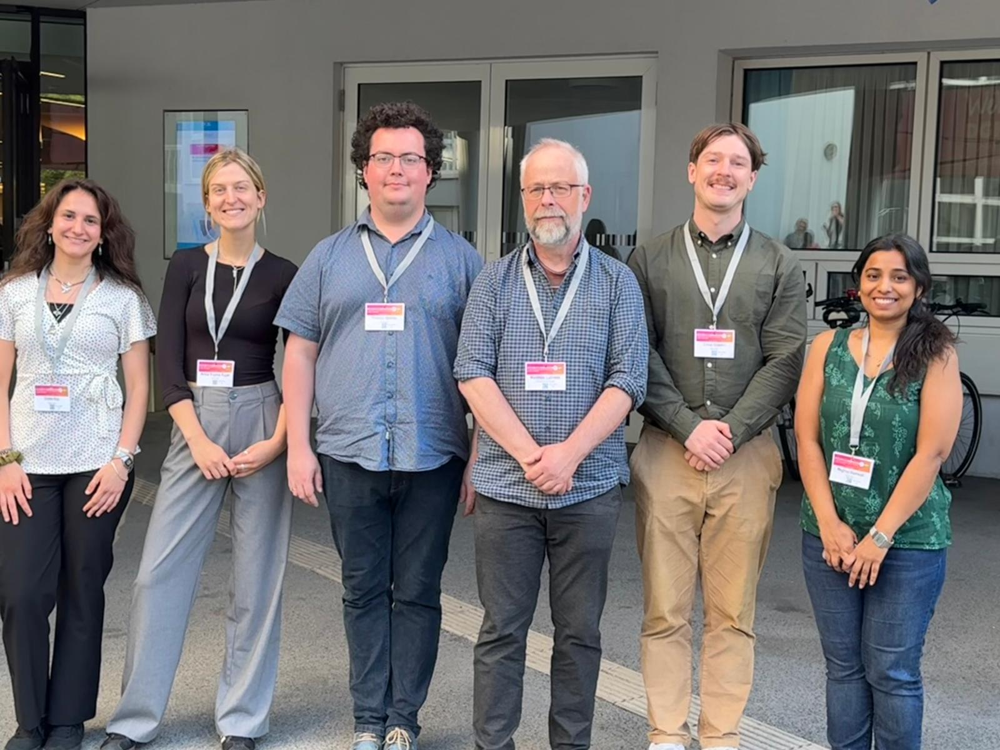

PhD Research
PhD Researcher — Leibniz Institute for Baltic Sea Research (IOW), Rostock, Germany (Feb 2022 – Jan 2026)
Thesis: Quantification, Prediction and Forecasting of
Vibrio vulnificus in the Southern Baltic Sea Using High-Resolution Data
Status: Submitted (grade pending)
Introduction
My PhD focused on developing data-driven methods to quantify, predict, and forecast the presence of the pathogenic bacterium Vibrio vulnificus in the Southern Baltic Sea. The project combined environmental microbiology with statistical modelling and machine learning, with the aim of contributing to early-warning systems for public health risk.
Sampling Campaign
The sampling campaign was carried out over a year. I will summarise it but the website is also here: https://www.iow.de/otcg_home.html. From April 2022 to May 2023 as part of a team I carried out sampling at 15 locations in the Baltic Sea and Warnow Estuary. 14 every Monday and Thursday and 1 every Tuesday. The objective at the beginning was to gather microbial data, so prokaryotic and eukaryotic, but we also tried our best to gather as much other data as possible at the same time. Including PhD students, postdocs, technical assistants and Bachelor and Masters students, there were around 11 people involved in the sampling and lab processing. So this meant we gathered data on DNA extraction for microbial community composition, nutrient analyses to assess primary production and plant growth, chlorophyll-a measurements to estimate phytoplankton biomass, fluorescence in situ hybridization (FISH) for species-specific quantification, flow cytometry for total cell counts, and chemical analyses targeting herbicides, pesticides, and pharmaceuticals. We also took temperature and salinity and then later gathered weather data etc. from external sources.
So from a practical perspective, I was driving around with someone and gathering water and environmental data at all the stations, of course gloves and ice etc. as per biological protocol. Between this and lab-processing it took 7-8 hours. After the year of sampling the post-sampling processing (e.g. DNA extraction, nutrient analysis, chlorophyll detection etc.) began. This took an additional 6 months and I did all the DNA extractions myself for this project.





Data Analysis
When the data analysis began it was pretty overwhelming. There was so much data cleaning to be done. The key to this dataset is that it is so comprehensive and I had an intricate knowledge of it, the locations and the different characteristics of the data. It is a complete one-year time-series dataset with no breaks, very useful for forecasting. It has a wide range of biological, chemical, environmental and genetic parameters gathered at the exact same time at the exact same location every few days.
My goal from pretty early on was to use this data in some capacity to predict Vibrio vulnificus, a bacterium that causes numerous deaths through infection each year in the Baltic Sea. Although I wasn't sure if it would be possible to actually forecast its presence at future timepoints. The dataset was analysed using a range of statistical and machine-learning techniques. My primary focus was on time-series modelling and predictive forecasting using Random Forest and Long Short-Term Memory (LSTM) models. Model performance was evaluated using appropriate validation strategies and multiple performance metrics. The work required extensive data preprocessing, feature engineering, handling of class imbalance, and interpretation of model outputs in an environmental context.
Manuscript Writing
My first manuscript documented the development of a way of using agar to tell if Vibrio vulnificus was in the water. This was a project run in the summer, where I was the lead in organising and executing the plan. A technical assistant grew the bacteria on agar plates all summer and we sent them away to get sequenced, in order to tell if the bacteria on the agar was Vibrio vulnificus, as we thought, or something else. I then compared the results to see if this technique of growing bacteria on agar can be used as a quick, cheap way of seeing if there is Vibrio vulnificus in the water and hopefully save lives.
After this I put all my attention into forecasting this bacterium at future timepoints e.g. predicting whether Vibrio vulnificus will be in the water next week, for example. The goal was to build an early-warning system to tell bathers when it would be in the water at beach locations. So I independently developed and wrote my first-author manuscript entitled AI-Driven Forecasting of Vibrio vulnificus in the Southern Baltic Sea Using High-Resolution Data, which has been submitted to Water Research. This was a long-haul and the whole project from start to finish was around 2.5 years.
In addition, I contributed to the writing, analysis, and revision of multiple other peer-reviewed publications, collaborating with interdisciplinary teams across microbiology, chemistry, and data science.
Conferences
I was lucky to have presented my work at numerous different conferences, and in front of audiences from lots of different fields. I was able to present in Germany, Poland, and Peru, which were great experiences. Here is a list:
Poster Presentations
-
Combined TCBS and CHROMagar analyses allow basic identification of Vibrio vulnificus within a 48-h incubation period in the coastal Baltic Sea.
7th Joint Conference “Joint Microbiology & Infection Conference 2024” of the German Society for Hygiene and Microbiology (DGHM) and the Association for General and Applied Microbiology (VAAM),
2–5 June 2024, Würzburg, Germany. -
Assessment and prediction of spatio-temporal dynamics of Vibrio vulnificus in the coastal Baltic Sea.
Vibrio2024 – The International Meeting on the Biology of Vibrios,
20–23 October 2024, Lima, Peru.
Oral Presentations
-
Assessment and prediction of spatio-temporal dynamics of Vibrio vulnificus in the coastal Baltic Sea.
Annual Conference 2025, Association for General and Applied Microbiology (VAAM),
23–26 March 2025, Bochum, Germany.
Oral Presentation (Plenary Talk)
-
Assessment and prediction of spatio-temporal dynamics of Vibrio vulnificus in the coastal Baltic Sea.
Baltic Sea Science Congress 2025,
26–30 May 2025, Sopot, Poland.


